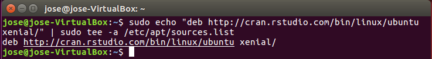
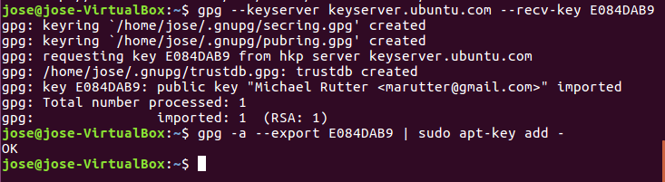
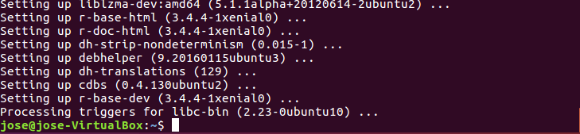
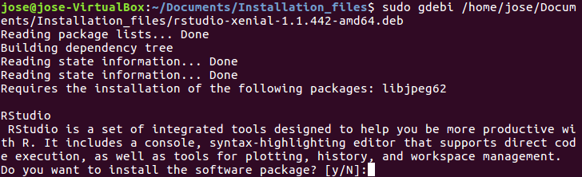
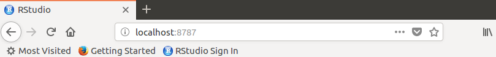
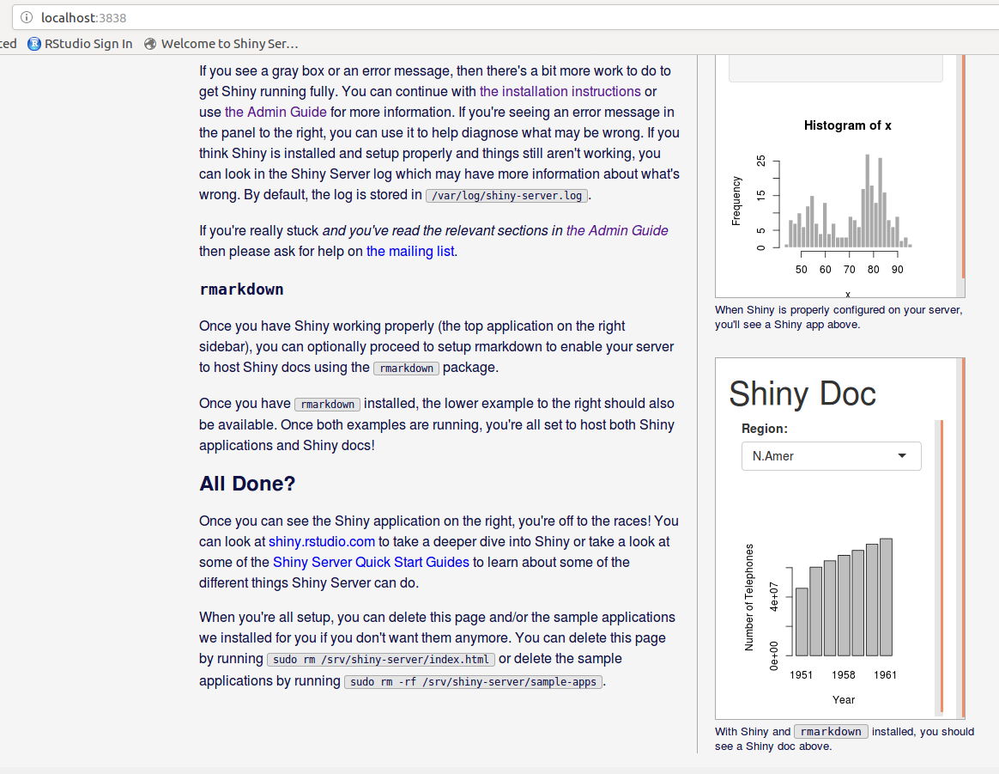

library(knitr)First, we’ve got to add a line to our /etc/apt/sources.list file. This can be accomplished with the following.
sudo echo "deb http://cran.rstudio.com/bin/linux/ubuntu xenial/" | sudo tee -a /etc/apt/sources.list
gpg --keyserver keyserver.ubuntu.com --recv-key E084DAB9
gpg -a --export E084DAB9 | sudo apt-key add -
sudo apt-get update
sudo apt-get install r-base r-base-dev
https://www.rstudio.com/products/rstudio/download/sudo apt-get install gdebi-core
sudo gdebi [PATH TO DOWNLOADED RSTUDIO FILE]
# When installation is complete, run the following command to open Rstudio
rstudio
wget https://download2.rstudio.org/rstudio-server-1.1.442-amd64.deb
sudo gdebi rstudio-server-1.1.442-amd64.debsudo rstudio-server verify-installationYou can access Rstudio server through a web browser and port 8787, using your login credentials (your name and surname you use to access your ubuntu/linux machine)
localhost:8787
sudo su - -c "R -e \"install.packages('shiny', repos='https://cran.rstudio.com/')\""wget https://download3.rstudio.org/ubuntu-12.04/x86_64/shiny-server-1.5.6.875-amd64.deb
sudo gdebi shiny-server-1.5.6.875-amd64.debsudo su - -c "R -e \"install.packages('rmarkdown', repos='https://cran.rstudio.com/')\""
sudo systemctl start shiny-serverI personally prefer the second one because the first requires messing around with the permissions of a folder that is owned by root. Nevertheless, I will show both ways and you decide what to do.
sudo touch /opt/shiny-server/samples/shiny_ds_welcome.html```sudo -H chown :decisionscience /opt/shiny-server/samples/shiny_ds_welcome.html
sudo -H chmod 775 /opt/shiny-server/samples/shiny_ds_welcome.htmlsudo -H ln -s [true directory - ie, the directory you have your app on] [linked directory - ie, the directory you are going to create the mirror to the true directory]As mentioned before, I prefer this, because we dont have to touch the /opt folder. We just need to do the last step from before:
Use the following command:
sudo -H ln -s [true directory - ie, the directory you have your app on] [linked directory - ie, the directory you are going to create the mirror to the true directory]